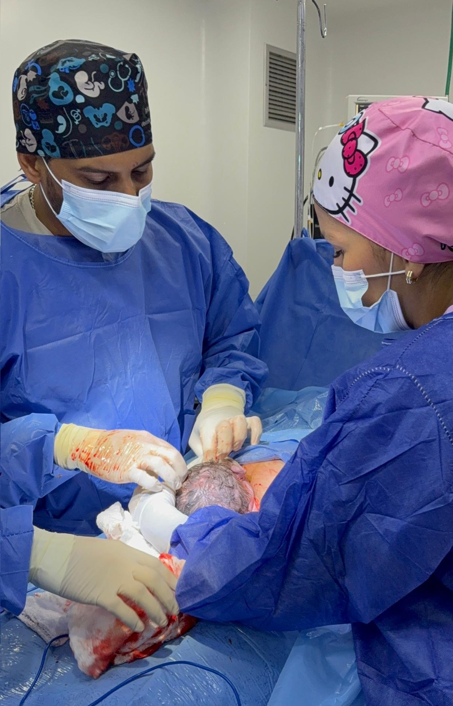

Conoce su trayectoria, filosofía y el equipo que la acompaña
La Dra. Victoria Prada es una médico especialista en ginecología y obstetricia, con una sólida trayectoria en el área. Su práctica se centra en ofrecer una atención que combina la más avanzada tecnología médica con un trato humano, cálido y personalizado.
Lidera un equipo multidisciplinario de primer nivel, lo que le permite ofrecer un abordaje integral para una amplia gama de necesidades, abarcando desde la ginecología y obstetricia general, hasta subespecialidades como coloproctología, urología, fertilidad, medicina perinatal y diagnóstico prenatal avanzado.

Actualización constante y uso de tecnología de vanguardia.
Ambiente seguro donde cada paciente se sienta escuchada.
Colaboración estrecha con un equipo de especialistas.
Procedimientos láser para una recuperación más rápida.
Atención integral de la salud femenina, control prenatal y parto.
Rehabilitación y tratamiento de incontinencia y prolapsos.
Diagnóstico y tratamiento de enfermedades del colon, recto y ano.
Salud urológica y estudios de fertilidad masculina.
Embarazos de alto riesgo y seguimiento especializado.
Ecografías 5D y diagnóstico temprano de malformaciones.
La Dra. Victoria Prada atiende en el piso 5 del Anexo del Centro Clínico Profesional Caracas, en San Bernardino, en el consultorio 512.
☎️ Teléfono fijo: (0212) 577-5970
📲 WhatsApp: +58 412 1827436
Lunes, Miércoles y Viernes: 9:00 am - 5:00 pm
Sábados: 9:00 am - 12:00 pm
Atención exclusivamente con cita previa
📞 ¿Cómo agendar?
Contáctanos por WhatsApp o llamada telefónica
💡 ¿Primera vez?
Llega 10 minutos antes para completar tus datos personales.